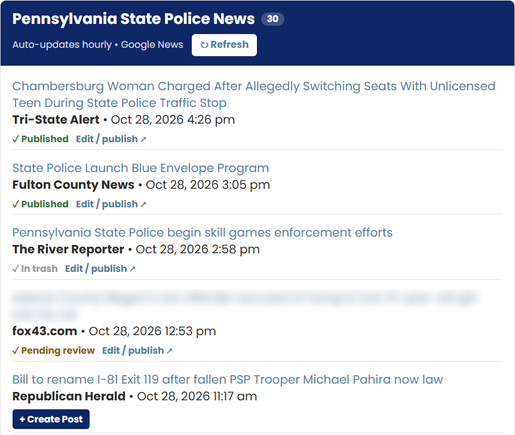

Review the feed
An administrator opens the curated list of current, relevant coverage.
§ Case study · Custom WordPress plugin
How a members' association went from hand-hunting press coverage to a one-click, review-first publishing workflow — without handing the keys to a machine.
§ 01 · The challenge
The association wanted its website to keep pace with news coverage relevant to its members. In practice that meant a staff member searching several outlets by hand, copying stories across, reformatting them, and hoping nothing worth sharing slipped by on a busy day.
It was slow, easy to fall behind on, and it stopped entirely whenever the person doing it was away. They needed something faster — but they were clear about one thing: a person, not an algorithm, had to decide what went live.
The brief wasn't "automate the news." It was "take the busywork out, and leave the judgment in."
§ 02 · The approach
Rather than deliver a black box, I built the tool in close collaboration with the client, shipping working versions and refining them against day-to-day use. Each round surfaced the kind of detail you only find in the wild — timestamps landing in the wrong time zone, stories from subscription outlets that would frustrate readers behind a paywall, access that needed tightening to administrators only.
Some ideas were tried and deliberately dropped when they didn't earn their place. That willingness to cut is part of the service: the client ends up with what works, not every feature that sounded good in a meeting.
§ 03 · What it does
The plugin gathers relevant coverage into a single, always-current list inside the WordPress admin. Curating is a matter of clicks — but every story still passes through a person before it reaches the public.

Relevant stories collect in one place, pulled from Google News and refreshed hourly. Adding one to the site takes a single click.
Nothing goes live on its own. Each item is created as a draft and published only by a person.
Each story shows whether it's awaiting review, published, or in the trash — so nothing falls through.
Stories likely to sit behind a subscription are flagged before anyone sends readers to a paywall.
Older items are cleared out on a schedule, so the news section stays fresh without manual pruning.
Curation and publishing are limited to administrators, keeping the workflow in the right hands.
§ 04 · How publishing works
An administrator opens the curated list of current, relevant coverage.
One click turns the chosen article into a draft, pre-filled with headline, summary, source, and link.
The draft opens for a read-through — add context, adjust the headline, confirm it's right.
One more click and it's live, filed exactly where the site expects it.
§ 05 · The outcome
What used to be an hour of searching and formatting is now a few minutes of reviewing and approving. The news section stays current even during busy stretches, and the association kept full editorial control — the tool does the fetching and formatting, a person makes every call.
Just as important, the client runs it themselves. It shipped with a plain-language guide and a workflow their whole team understands, so any administrator can publish confidently on day one.
§ How I work
Custom functionality that fits how an organization actually operates, built in collaboration, refined against real use, and handed over so you're never dependent on me to run it. If a repetitive task is eating your team's time, there's usually a better way — and it rarely means giving up control.